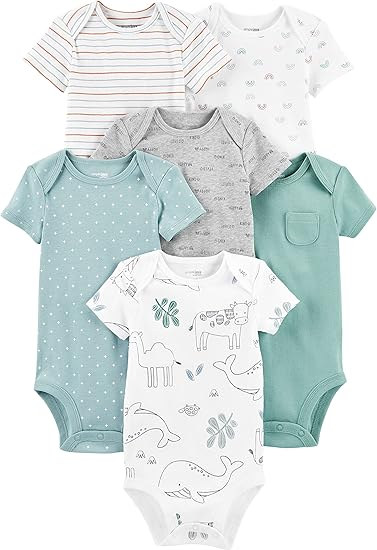
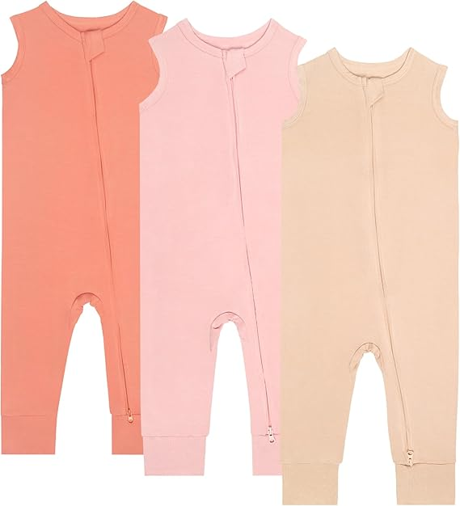
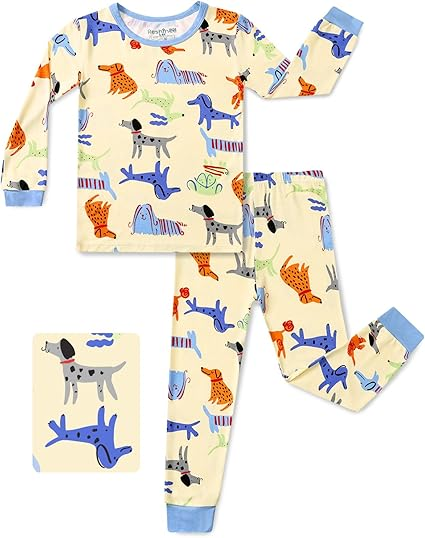
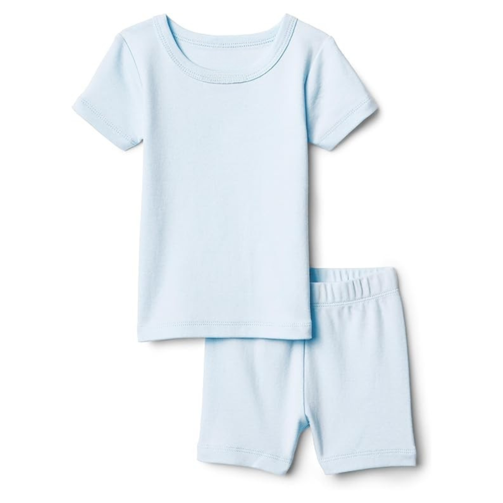
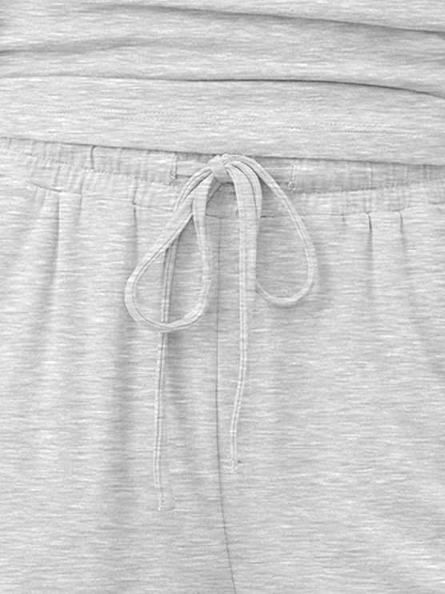
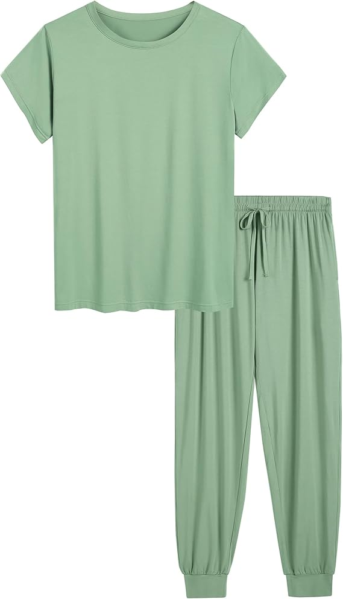
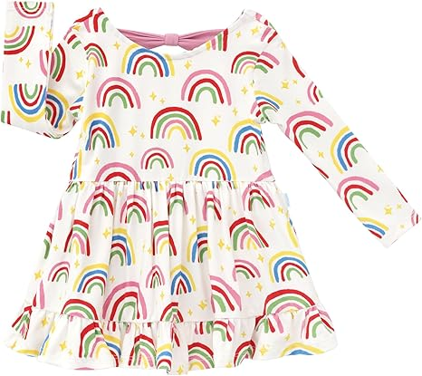

Short Sleeve Bodysuit

Zippered Sleeveless Romper

Long Sleeve Toddler Pajamas

Short Sleeve Toddler Pajamas
Short Sleeve Toddler Crew Neck Tee

Bamboo Jersey Tank Jogger Set

Bamboo Jersey Short Sleeve Jogger Set

Twirl Bodysuit Dress